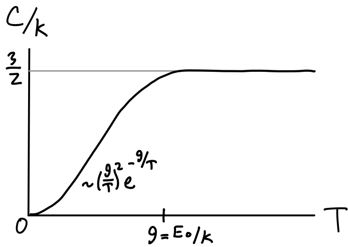
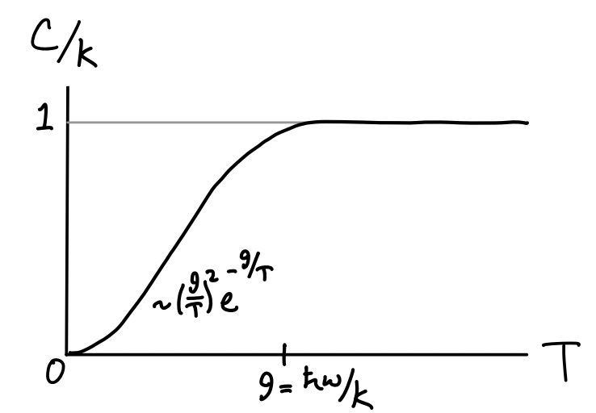
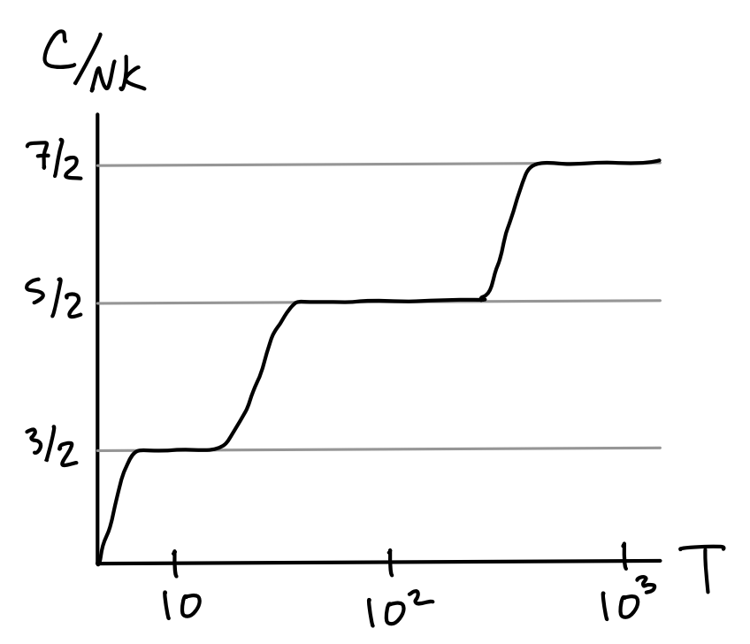
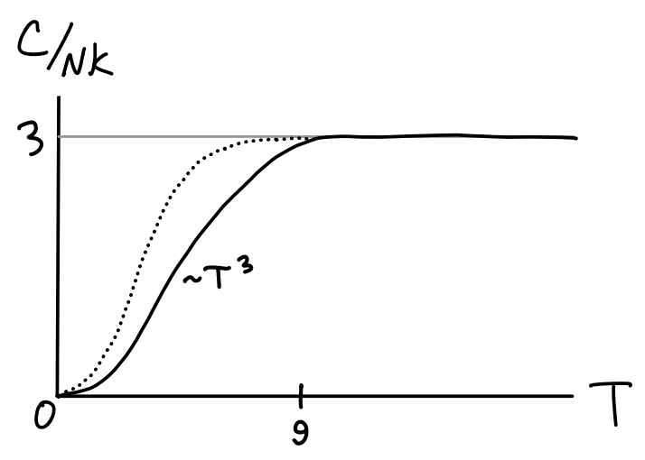
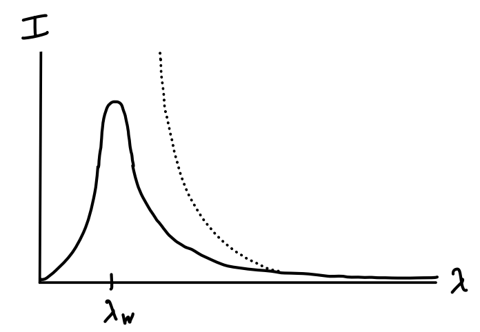

Quantum Statistical Mechanics
Just as classical mechanics has its limitations in its ability to explain the behavior of particles at or below the atomic level, classical statistical mechanics has its limitations as well. In particular, it tends to break down at low temperatures. For example, we weren’t able to derive the third law of thermodynamics, the statement that both entropy and heat capacity should go to zero at absolute zero, from classical statistical mechanics.
There are several problems that arose in the late 19th century that highlighted the limitations of classical statistical mechanics. We’ll use quantum statistical mechanics to resolve three of these important problems at the end of this chapter. These deal with the heat capacity of diatomic gases, the heat capacity of solids, and the problem of blackbody radiation. Before we cover these problems we’ll start by reviewing the theory of quantum mechanics, and from there proceed to formulate the quantum version of statistical mechanics, quantum statistical mechanics.
Quantum Mechanics
Let’s briefly recall how we initiated the theory of classical statistical mechanics. We started by supposing a system had some huge number of microstates \(\mu = \{\mathbf{x}_i, \mathbf{p}_i\}\). We then wanted to figure out how many of these microstates corresponded to any one individual macrostate \(M=(E,X,N)\). This led us to a definition of the of the equilibrium probability density as the phase space density under the macroscopic constraints. From this we were then able to specify the various statistical ensembles and derive the laws of thermodynamics.
We can do something similar in the quantum version, except we need to rethink what exactly it is we mean by a microstate. In classical mechanics we define a state as a point \((\mathbf{x},\mathbf{p})\) in the phase space. In quantum mechanics, however, we have to contend with the uncertainty principle, which forbids knowing both \(\mathbf{x}\) and \(\mathbf{p}\) simultaneously too precisely. More correctly, for each component we have the uncertainty relation \[ \Delta x_i \Delta p_j \geq \frac{\hbar}{2} \delta_{ij} \ , \] where \(\hbar \approx 10^{-34} \text{ J s}\) is the reduced Planck constant. This really tiny number limits how closely we can resolve points in phase space, since we’re disallowed by the uncertainty principle from localizing points at finer scales than \(\hbar\). We can really only imagine defining smooth functions on phase space at scales much larger than \(\hbar\). Below that we have to transition to quantum mechanics.
Quantum Microstates
In quantum mechanics, a microstate \(\mu\) is specified by an abstract ket vector \(| \psi\rangle\) that lives in a complex Hilbert space which can be of any dimension, finite or infinite. We assume all the rules of the linear algebra for complex vectors applies to Hilbert spaces. For example, we assume we can decompose any ket in the Hilbert space into a linear combination of basis kets, e.g. \[ |\psi\rangle = \sum_{n} \langle n | \psi\rangle |n \rangle \equiv \sum_{n} \psi_n |n \rangle \ . \] Here \(\psi_n \equiv \langle n | \psi\rangle\) is the complex-valued inner product between the kets \(|n\rangle\) and \(|\psi \rangle\). Notice the ket \(|n\rangle\) gets converted first into a bra vector \(\langle n |\), which can be thought of as the conjugate transpose of the ket \(|n\rangle\). This implies we can write the inner product between any two vectors by applying the bra of one to the ket of the other, \[ \langle \phi | \psi \rangle = \sum_n \phi_n^* \psi_n \ . \] We typically require that kets in the Hilbert space be normalized, i.e. \(\langle \psi | \psi \rangle = 1\) for any \(|\psi \rangle\). This means that the length of a vector in quantum mechanics contains no physical information. The reason we normalize them to one is so we can use them to represent probability densities, or amplitudes. This is done using the Born rule, which says that the norm of a vector represents the probability of that state being observed. For example, the inner product \(|\psi_n|^2 = \langle n|\psi \rangle^2\) represents the probability amplitude that \(|\psi\rangle\) is found exactly in the state \(|n\rangle\). If \(|n\rangle\) represents a state with energy \(E_n\), then \(|\psi_n|^2\) represents the probability density of \(|\psi\rangle\) having energy \(E_n\). That is, \(p_\psi(E=E_n) = |\psi_n|^2\).
It’s important to note that this is a fundamentally different kind of probability than that of statistical mechanics. It’s an irreducible probability, not one arising from our ignorance about the system. No matter how much knowledge we have of the system, or how well we can measure it, we still have to contend with these sorts of quantum probabilities.
In practice, it’s often useful to think of states using wavefunctions, which are the components \(\psi(\mathbf{x})\) of kets in the position basis, \[ |\psi \rangle = \int d^3 \mathbf{x} \ \langle \mathbf{x} | \psi\rangle |\mathbf{x} \rangle \equiv \int d^3 \mathbf{x} \ \psi(\mathbf{x}) |\mathbf{x} \rangle \ . \] By the Born rule, if \(|\psi\rangle\) represents the state of some particle, we can think of the amplitude \(|\psi(\mathbf{x})|^2\) as the probability density of observing that particle in space near the point \(\mathbf{x}\). We can imagine wavefunctions in other bases as well. For example, the momentum space wavefunction is defined in a similar way by \(\psi(\mathbf{p}) \equiv \langle \mathbf{p}|\psi \rangle\).
In classical mechanics, we can think of observables like energy, momentum, etc. as functions \(Q(\mathbf{x},\mathbf{p})\) on the phase space. We could then proceed to study the dynamics of those observables by looking at their Poisson bracket with the Hamiltonian, \[ \frac{dQ}{dt} = \{Q, H\} \ . \] By the uncertainty principle this is again disallowed in quantum mechanics. Instead, we think of observables as operators \(Q\) that map kets to other kets in the Hilbert space, e.g. \(Q|\psi\rangle = |\psi\rangle\). We also require that observables be Hermitian, meaning \(Q\) must equal its conjugate transpose \(Q^\dagger\). This ensures the spectrum of eigenvalues of \(Q\) are all real-valued and the eigenvectors are all orthogonal, or can be chosen to be orthogonal.
In classical mechanics we can imagine measuring some observable \(Q\) to as high a precision as we like by tuning the apparatus to make better and better measurements. In quantum mechanics this is again disallowed by the uncertainty principle. Instead, attempts to measure \(Q\) will force it to randomly take on one of a set of fixed values, its spectrum of eigenvalues. Mathematically, if \(Q\) is some observable and we attempt to measure it in some state \(|\psi\rangle\), we imagine measurement as sampling some \(q\) from the distribution defined by the density \(p_\psi(q)=|\psi_q|^2\). This also means we can define an expected value for \(Q\) in the usual way, \[ \langle Q \rangle_\psi \equiv \sum_q q \ p_\psi(q) = \langle \psi | Q | \psi \rangle \ . \] Notice the probability density and expected value both depend on the state \(|\psi\rangle\). If the state changes, so will these functions. Again, there is nothing statistical about this probability. Even with a single particle we’d still have to worry about it.
To study the dynamics of observables in quantum mechanics we should replace the Poisson bracket with the commutator \[ [A,B] \equiv AB - BA, \] a measure of how much the operators \(A\) and \(B\) fail to commute with each other. If two observables commute we can in principle measure them simultaneously with no uncertainty. Otherwise they obey an uncertainty principle. For example, we already know the position operator \(\mathbf{x}\) doesn’t commute with the momentum operator \(\mathbf{p}\) since they have an uncertainty principle. In fact, their components satisfy the commutation relation \[ [x_i, p_j] = i\hbar\delta_{ij} \ . \] Comparing this with the Poisson bracket relation \(\{x_i, p_j\} = \delta_{ij}\) we can establish a crude identification between the two brackets, \[ [A,B] \quad \longleftrightarrow \quad -\frac{i}{\hbar} \{A,B\} \ . \] This suggests that the time evolution of any observable \(Q\) in quantum mechanics is given by \[ \frac{dQ}{dt} = -\frac{i}{\hbar} [Q, H] \ , \] where the Hamiltonian is now thought of as an operator. This relation is indeed true, at least in the Heisenberg picture of quantum mechanics, where operators are allowed to evolve in time. In the more elementary Schrödinger picture it’s the states that are allowed to evolve, not the operators. In this picture it’s the expectation of the operators that are allowed to time evolve this way. The time evolution of states can be found by using the requirement that the time evolution of kets must be given by a unitary operator \(U(t) \equiv e^{-\frac{i}{\hbar} Ht}\), where \(H\) is the Hamiltonian, \[ |\psi(t)\rangle = U(t) |\psi(0)\rangle \ . \] A unitary operator satisfies the condition that \(U U^\dagger = 1\). This implies that unitary operations conserve quantum probabilities, since \(U|\psi\rangle\) will have the same probability amplitude as \(|\psi\rangle\). Requiring that time evolution be unitary in this way leads us to the time-dependent Schrödinger equation. If we assume \(t\) is infinitesimal we can write \(U(t) \approx I - \frac{i}{\hbar} Ht\). Plugging this in and rearranging then gives the more familiar result for the time evolution of states, \[ H |\psi(t)\rangle = i\hbar \frac{\partial}{\partial t} |\psi(t) \rangle \ . \] The eigenvalues of the Hamiltonian are the allowed energies the system can take on. If \(E_n\) is an eigenvalue of \(H\) with eigenvector \(|n\rangle\), we can trivially write \(H|n\rangle = E_n |n\rangle\). This is often called the time-independent Schrödinger equation.
An important set of relationships to be aware of in quantum mechanics is that between position and momentum. We already saw that the position and momentum operators satisfy the commutation relation \([x_i, p_j] = i\hbar\delta_{ij}\). This means that it’s impossible to simultaneously diagonalize the two operators and get product states like \(|\mathbf{x},\mathbf{p}\rangle\). If we could do that we could just use the classical theory of Hamiltonian dynamics. Instead, we have to think about the position basis and momentum basis as being distinct representations. It’s possible to show, however, that the two representations are Fourier transforms of each other, \[ |\mathbf{p} \rangle = \int \frac{d^3 \mathbf{x}}{(2\pi\hbar)^{3/2}} \ e^{\frac{i}{\hbar} \mathbf{x} \cdot \mathbf{p}} |\mathbf{x}\rangle \ . \] This relation essentially encodes the uncertainty principle. For example, if \(|\mathbf{x}\rangle\) were known exactly in position space, then its wavefunction would be a delta function. But the Fourier transform of a delta function is a constant, which means that in momentum space we’d have to allow for the system to have any possible momentum with equal probability.
The Fourier relation above is particularly useful when solving the Schrödinger equation for a free particle. For these kinds of problems it’s more convenient to work rescale units to get rid of factors of \(\hbar\). We can do that by using the DeBroglie relation \(\mathbf{p} = \hbar \mathbf{k}\), where \(\mathbf{k}\) is the wavevector defined by \(|\mathbf{k}| = \frac{2\pi}{\lambda}\). Here \(\lambda\) is the wavelength of a wavefunction moving with momentum \(\mathbf{p}\). In this slight rescaling of units the factors of \(\hbar\) disappear and the Fourier transform becomes \[ |\mathbf{k} \rangle = \int \frac{d^3 \mathbf{x}}{(2\pi)^{3/2}} \ e^{i \mathbf{x} \cdot \mathbf{k}} |\mathbf{x}\rangle \ . \] Since we’ll end up using it later, let’s go ahead and work it out the quantum dynamics of the free particle.
Example: Free Particle
Consider a particle moving in free space. We’ve seen many times such a particle has Hamiltonian \(H = \frac{\mathbf{p}^2}{2m}\), except in this case we should think of \(H\) as an operator that depends solely on the momentum operator \(\mathbf{p}\). For convenience we’ll rescale and work in units of the wavevector \(\mathbf{k}\). This means that the eigenvectors of \(H\) are also the eigenvectors of \(\mathbf{k}\), hence \[ H | \mathbf{k} \rangle = E(\mathbf{k}) | \mathbf{k} \rangle = \frac{\hbar^2 \mathbf{k}^2}{2m} |\mathbf{k} \rangle \ . \] We thus have an expression for the energy in terms of the wavevector as \(E(\mathbf{k}) = \frac{\hbar^2 \mathbf{k}^2}{2m}\). Suppose we’re interested in the energy wavefunctions \(\psi_\mathbf{k}(\mathbf{x}) = \langle \mathbf{x} |\mathbf{k} \rangle\) as well. These are just the wavefunctions associated with the Fourier transform for \(|\mathbf{k}\rangle\), \[ \begin{align*} \psi_\mathbf{k}(\mathbf{x}) &= \langle \mathbf{x} |\mathbf{k} \rangle \\ &= \int \frac{d^3 \mathbf{x}'}{(2\pi)^{3/2}} \ e^{i \mathbf{x}' \cdot \mathbf{k}} \langle \mathbf{x}|\mathbf{x}'\rangle \\ &= \int \frac{d^3 \mathbf{x}'}{(2\pi)^{3/2}} \ e^{i \mathbf{x}' \cdot \mathbf{k}} \delta(\mathbf{x} - \mathbf{x}') \\ &= \frac{1}{(2\pi)^{3/2}} e^{i \mathbf{x} \cdot \mathbf{k}} \ . \end{align*} \] Thus, the energy eigenfunctions are just complex plane waves in position space. In fact, they’re plane waves in both position in time, since the time-dependent energy eigenfunctions are just the static wavefunctions multiplied by \(e^{-i\omega t}\) where \(E=\hbar \omega\), \[ \psi_\mathbf{k}(\mathbf{x}, t) = \frac{1}{(2\pi)^{3/2}} e^{i (\mathbf{x} \cdot \mathbf{k}-\omega t)} \ . \] The true wavefunction \(\psi(\mathbf{x}, t)\) of the particle can be found by superimposing all the energy eigenfunctions together, \[ \psi(\mathbf{x},t) = \langle \mathbf{x} | \psi \rangle = \int d^3 \mathbf{k} \langle \mathbf{x} | \mathbf{k} \rangle \langle \mathbf{k} | \psi \rangle = \int d^3 \mathbf{k} \ \psi_\mathbf{k}(\mathbf{x}, t) \phi(\mathbf{k}) \ . \] Here the coefficients \(\phi(\mathbf{k}) = \langle \mathbf{k} | \psi \rangle\) are determined by the initial conditions. If the particle is reasonably well localized, \(\phi(\mathbf{k})\) will tend to have a reasonably narrow peak around some particular \(\mathbf{k}\). This will tend to result in \(\psi(\mathbf{x},t)\) having a shape where the waves are confined inside of a larger wave packet, whose group velocity is given from the dispersion relation \(\omega(\mathbf{k}) = \frac{\hbar \mathbf{k}^2}{2m}\) as \[ \mathbf{v}_g \equiv \frac{d\omega}{d\mathbf{k}} = \frac{\hbar \mathbf{k}}{m} = \frac{\mathbf{p}}{m} \ . \] The group velocity of the wave packet can be thought of as the quantum origin of the velocity of a classical particle, \(\mathbf{v} = \frac{\mathbf{p}}{m}\). Note that since \(\omega(\mathbf{k})\) isn’t linear in \(\mathbf{k}\) the wave will also be dispersive, with a phase velocity \(v_p \equiv \frac{\omega}{|\mathbf{k}|}\) that’s half the group velocity.
Example: Particle in a Box
What if now we impose the requirement that the particle be confined to a box of dimensions \(L_x \times L_y \times L_z\) with volume \(V\)? In this case we have to be careful to impose the correct boundary conditions on the wavefunctions. We’ll assume that the wavefunction is periodic at the walls of the box. That is, \[ \begin{align*} \psi(x,y,z,t) &= \psi(x+L_x,y,z,t), \\ \quad \psi(x,y,z,t) &= \psi(x,y+L_y,z,t), \\ \quad \psi(x,y,z,t) &= \psi(x,y,z+L_z,t) \ . \end{align*} \] We should expect the energy eigenfunctions to have the same form as for a free particle, with \(\psi_\mathbf{k}(\mathbf{x}, t) \propto e^{i (\mathbf{x} \cdot \mathbf{k}-\omega t)}\), except that now the boundary conditions will impose constraints on the wavevector \(\mathbf{k}\). Periodicity of the boundary conditions require \[ A e^{i (xk_x + yk_y + zk_z-\omega t)} = A e^{i \big((x+L_x)k_x + yk_y + zk_z-\omega t\big)} \quad \Longrightarrow \quad e^{ik_x L_x} = 1 \ , \] and similarly for the \(y\) and \(z\) components. This condition requires that each component of \(\mathbf{k}\) be discrete, with \[ k_x = \frac{2\pi n_x}{L_x}, \quad k_y = \frac{2\pi n_y}{L_y}, \quad k_z = \frac{2\pi n_z}{L_z} \ , \] where each of \(n_x, n_y, n_z\) are independent positive integers. This also forces the energy eigenvalues to be discrete, with \[ E_\mathbf{n} = \frac{\hbar^2}{2m} \bigg(\frac{n_x^2}{L_x^2} + \frac{n_y^2}{L_y^2} + \frac{n_y^2}{L_y^2}\bigg) \ . \] That is, \(H|\mathbf{n}\rangle = E_\mathbf{n} |\mathbf{n}\rangle\). The energy eigenfunctions can be found by plugging in the expressions for \(\mathbf{k}_\mathbf{n}\) and renormalizing, \[ \psi_\mathbf{n}(\mathbf{x}, t) = \frac{1}{\sqrt{V}} e^{i \big(\mathbf{k}_\mathbf{n} \cdot \mathbf{x} - \omega_\mathbf{n} t\big)} \ . \] As we might expect, rather than plane waves in space and time, the bounded solutions represent standing waves inside the box, where each \(\mathbf{n}\) represents some specific configuration of harmonics. The full wavefunction \(\psi(\mathbf{x},t)\) is again given by a superposition of these standing waves, except this time a discrete sum of them, \[ \psi(\mathbf{x},t) = \langle \mathbf{x} | \psi \rangle = \sum_{\mathbf{n}} \langle\mathbf{n} | \psi \rangle \langle \mathbf{x} | \mathbf{n} \rangle = \sum_{\mathbf{n}} c_\mathbf{n}\psi_\mathbf{n}(\mathbf{x}, t) \ . \] Here, \(c_\mathbf{n} = \langle \mathbf{n} | \psi \rangle\) are just the usual complex Fourier series coefficients, which are determined by the initial conditions.
Density Operator
Now that we’ve reviewed the essentials of quantum mechanics we can proceed to setup the apparatus of quantum statistical mechanics. We’ve setup the framework for thinking of the microstates as kets in a Hilbert space, \(\mu = \{|\psi\rangle\}\). The macrostates remain the same, \(M = (E,X,N)\). We now just need to find a way to connect the two via some sort of probability density. It’s not clear though how to think about what a density is in quantum mechanics. We can’t define a density on phase space since we can’t have diagonalizable functions of both position and momentum.
To do that we need to think more carefully about what we mean by a quantum mechanical state. Strictly speaking when we say a state is a ket \(|\psi\rangle\), what we really mean is that \(|\psi\rangle\) is the state of the system in the idealized situation where we have exact knowledge of the system. These are called pure states. We can think of pure states not only as kets, but as outer products \[ \rho \equiv |\psi\rangle \langle \psi| \ . \] In this form pure states are no longer kets but operators. When operating on their ket equivalent they give back the ket, \[ \rho |\psi \rangle = |\psi\rangle \langle \psi| \psi \rangle = |\psi \rangle \ . \] In practice we usually don’t observe exact knowledge of the system. Instead we have to look at the system as an ensemble of states, e.g. by looking at a large number of particles instead of a single particle. In this situation we have to think of a state as a statistical mixture of pure states, \[ \rho \equiv \sum_\alpha p_\alpha |\psi_\alpha\rangle \langle \psi_\alpha| \ . \] Here \(p_\alpha\) is a classical probability weight indicating our lack of knowledge about the system. It’s statistical in nature, not quantum mechanical. States like this are called mixed state, because they’re a statistical mixture of pure states. Unlike pure states, we can’t think of mixed states as a ket in Hilbert space. We have to think of them as operators.
What’s most important for our purposes is the nature of this operator \(\rho\), called the density operator. As the notation and name suggests, this is our likely candidate for the quantum mechanical version of the phase space density. To verify this, we first need to show that \(\rho\) represents the operator equivalent of a probability density. It should be:
Positive semi-definite: That is, \(\langle \psi | \rho | \psi \rangle \geq 0\) for any ket \(|\psi\rangle\). To verify this, observe \[ \langle \psi | \rho | \psi \rangle = \sum_\alpha p_\alpha \langle \psi|\psi_\alpha\rangle \langle \psi_\alpha|\psi\rangle = \sum_\alpha p_\alpha |\langle \psi|\psi_\alpha\rangle|^2 \geq 0 \ . \]
Hermitian: The probability density should be observable, which means \(\rho = \rho^\dagger\). This is easy to verify, \[ \rho^\dagger = \sum_\alpha p_\alpha \bigg(|\psi_\alpha\rangle \langle \psi_\alpha|\bigg)^\dagger = \sum_\alpha p_\alpha |\psi_\alpha\rangle \langle \psi_\alpha| = \rho \ . \]
Unit Trace: That is, \(\tr \rho = 1\). This is the generalization of probabilities summing to one. To verify we’ll pick a basis and sum, \[ \tr \rho = \sum_n \langle n | \rho | n \rangle = \sum_\alpha p_\alpha \sum_n \langle n | \psi_\alpha \rangle \langle \psi_\alpha | n \rangle = \sum_\alpha p_\alpha = 1 \ . \] Here we used the fact that \(p_\alpha\) is a valid classical probability that sums to one, and that each \(|\psi_\alpha\rangle\) must be normalized.
We’ve thus shown that the density operator is a valid operator generalization of the probability density. Given this fact we can also proceed to define what we mean by an expected value in quantum statistical mechanics. Now we’re taking not just an average, but a classical ensemble average of a quantum average. It’s not hard to show that we can indeed naturally define \[ \langle Q \rangle \equiv \sum_\alpha p_\alpha \langle Q \rangle_{\psi_\alpha} = \tr \rho Q \ . \] We still need to show that it has the same dynamical character as the phase space density. Recall the classical density must satisfy Liouville’s equation \(\frac{\partial\rho}{\partial t} = -\{\rho, H\}\). According to the replacement rules between Poisson brackets and commutators, we should expect something similar here. Using the definition of the density operator and the Schrödinger equation, we have \[ \begin{align*} \frac{\partial\rho}{\partial t} &= \frac{\partial}{\partial t} \sum_\alpha p_\alpha |\psi_\alpha\rangle \langle \psi_\alpha| \\ &= \sum_\alpha p_\alpha \bigg(|\psi_\alpha\rangle\frac{\partial \langle \psi_\alpha|}{\partial t} + \frac{\partial|\psi_\alpha\rangle}{\partial t}\langle \psi_\alpha|\bigg) \\ &= \sum_\alpha p_\alpha \bigg(\frac{i}{\hbar}|\psi_\alpha\rangle \langle \psi_\alpha| H - \frac{i}{\hbar}H|\psi_\alpha\rangle \langle \psi_\alpha| \bigg) \\ &= \frac{i}{\hbar} \bigg[\bigg(\sum_\alpha p_\alpha |\psi_\alpha\rangle \langle \psi_\alpha| \bigg) H - H \bigg(\sum_\alpha p_\alpha |\psi_\alpha\rangle \langle \psi_\alpha| \bigg)\bigg] \\ &= \frac{i}{\hbar} [\rho, H] \ . \end{align*} \] We’ve thus proved the quantum mechanical equivalent of Liouville’s equation, known as the von-Neumann equation, \[ \boxed{ \frac{\partial\rho}{\partial t} = \frac{i}{\hbar} [\rho, H] } \ . \]
For an ensemble in equilibrium, we require the density be time-independent, i.e. \[ \frac{\partial\rho}{\partial t} = \frac{i}{\hbar} [\rho, H] = 0 \ . \] This means that in equilibrium \(\rho\) must commute with \(H\) and any other conserved quantities that also commute with \(H\). In the simplest case where only energy is conserved, this means in equilibrium we must again have \(\rho = \rho(H)\).
Statistical Mechanics
We can now proceed as usual to define all of the statistical ensembles, except with the caveat that we have to think in terms of operators. We typically think of the density operator as a mixture of energy states, \[ \rho = \sum_n p_n |n\rangle \langle n | \ . \] This choice of states is convenient because we want \(\rho\) to be time-independent at equilibrium, and we know that in the energy basis the pure states will remain time-independent. To get the probability of the system being in a particular energy eigenstate we just need to pick out one of these elements to get \[ p_n = \langle n | \rho | n \rangle \ . \] Since it’s easy, we’ll typically work in this energy basis when solving problems in quantum statistical mechanics.
Microcanonical Ensemble
We started the classical theory by looking at the microcanonical ensemble where \(M = (E,X,N)\). In that setting we have \[ \rho = \frac{\delta(H-E)}{\Omega} \ . \] In the energy basis, this says \[ p_n = \langle n|\rho |n \rangle = \frac{1}{\Omega} \delta(E-E_n) \ . \] This is a reflection of the usual assumption of equal a priori probabilities, where each microstate with energy \(E\) can occur with the same uniform probability \(p_n = \frac{1}{\Omega}\). It’s also illuminating to look at the off-diagonal elements of the density operator. Observe \[ \langle m | \rho | n \rangle = \frac{\delta(E-E_n)}{\Omega} \delta_{mn} \ . \] These terms are non-zero only when both \(E=E_n\) and \(m=n\). That is, only the diagonal elements are non-zero. The fact that the off-diagonal elements are zero is often called the assumption of random phases. Essentially, it means the system has had time to fully mix with its environment, leading to quantum decoherence. When a quantum system has fully decohered, its wave packets have become very well localized, its density operator is diagonal, and it becomes well approximated by classical dynamics.
We can also find an explicit expression for the multiplicity \(\Omega\) by tracing over \(\rho\) and solving to get \[ \Omega = \text{tr} \ \delta(H-E) = \sum_n \delta(E-E_n) \ . \] This factor again represents the number of microstates with energy \(E\). From this expression we can again derive the entropy and write it in the familiar form \[ S = -\sum_n p_n \log p_n = k_B \log \Omega \ . \] With the entropy in hand we can proceed to derive all the thermodynamic variables of interest as usual. For example, we can find the temperature by solving the equation \[ \frac{1}{T} = \frac{\partial S}{\partial E} \bigg |_{X,N} \ . \] Just as in the classical theory, the microcanonical is often not the most convenient ensemble to work with, so we should cover the more convenient ones too.
Canonical Ensemble
We can similarly look at the canonical ensemble where \(M=(T,X,N)\). In that setting we have \[ \rho = \frac{1}{Z} e^{-\beta H} \ , \] where \(Z\) is the quantum canonical partition function. In the energy basis this means the probability of any given eigenstate is \[ p_n = \frac{1}{Z} e^{-\beta E_n} \ . \] By tracing over \(\rho\) we can express \(Z\) using the useful formula \[ \boxed{ Z = \text{tr} \ e^{-\beta H} } \ . \] In terms of the energy basis this just says \[ Z = \sum_n e^{-\beta E_n} \ . \] From the partition function we can again proceed to find all thermodynamic variables of interest. For example, the average energy \(E\) of the system is given by \[ E = \langle H \rangle = \text{tr} \ \rho H = -\frac{\partial \log Z}{\partial \beta} \ . \]
Higher Ensembles
In a similar fashion of course we can also look at the two higher ensembles. In the Gibbs canonical ensemble we take as macrostates \(M = (T,J,N)\). The density operator becomes \[ \rho = \frac{1}{Z_G} e^{-\beta (H-J \cdot X)} \ , \] where the Gibbs canonical partition function \(Z_G\) is given by \[ Z_G = \int dX \ \tr e^{-\beta (H-J \cdot X)} = \int dX \ e^{\beta J \cdot X} Z \ . \] Notice that while \(H\) is thought of as an operator, the displacement \(X\) and force \(J\) are not. They’re just ordinary vectors. We can find the mean displacement \(\langle X \rangle\) in the usual way by \[ \langle X \rangle = \frac{\partial \log Z_G}{\partial (\beta J)} \ . \] Similarly, in the grand canonical ensemble we take as macrostates \(M=(T,X,\mu)\) where \(\mu\) is the chemical potential. Then \[ \rho = \frac{1}{\mathcal{Z}} e^{-\beta (H-\mu \cdot N)} \ , \] where the Grand canonical partition function \(\mathcal{Z}\) can be found by the formula \[ \mathcal{Z} = \sum_{N=0}^\infty \text{tr} \ e^{-\beta (H-\mu \cdot N)} = \sum_{N=0}^\infty e^{\beta \mu \cdot N} Z \ . \] Again, here we should think of \(\mu\) and \(N\) as ordinary vectors, not operators. We can find the mean particle number \(\langle N \rangle\) in the usual way as well by \[ \langle N \rangle = \frac{\partial \log\mathcal{Z}}{\partial (\beta \mu)} \ . \] Both formulations reduce to their obvious form when working in the energy basis.
Classical Limit
It’s worth briefly mentioning here in what sense classical statistical mechanics is a limit of quantum statistical mechanics. Clearly in the classical world of large energies the laws of classical statistical mechanics are perfectly valid, yet we know that quantum statistical mechanics should be the true theory in all cases. To see how the classical limit arises let’s look at the canonical partition function \(Z\) and see how we can go from the quantum to the classical version via some kind of limiting procedure.
Let’s suppose for simplicity we want to find \(Z\) for a single particle with a Hamiltonian operator given by \[ H = \frac{\mathbf{p}^2}{2m} + V(\mathbf{x}) \ . \] In the position basis, this means the single-particle partition function can be written \[ Z = \text{tr} \ e^{-\beta H} = \int d^3 \mathbf{x} \ \big\langle \mathbf{x} \big| e^{-\beta \big(\frac{\mathbf{p}^2}{2m} + V(\mathbf{x})\big)} \big| \mathbf{x} \big\rangle \ . \] Now, we’d like to factor the exponential, except we have to be careful because the exponents here are operators. For two arbitrary operators \(A\) and \(B\) we can’t generally say \(e^{A+B} = e^A e^B\). This is only true if \(A\) and \(B\) commute. We already know position and momentum don’t commute. The more general result requires a series in terms of the iterated commutators of \(A\) and \(B\). To first few terms written out look like \[ e^{A} e^{B} = e^{A + B + \frac{1}{2} [A,B] + \cdots} \ . \] Since \([x_i, p_j] = i\hbar\delta_{ij}\) the first order correction to the classical result is of order \(\hbar\), which means we can rearrange and write \[ e^{-\beta \big(\frac{\mathbf{p}^2}{2m} + V(\mathbf{x})\big)} = e^{-\beta \frac{\mathbf{p}^2}{2m}} e^{-\beta V(\mathbf{x})}\big(1 + \beta O(\hbar)\big) \ . \] In the classical limit we typically imagine sending \(\hbar \rightarrow 0\), in which case the classical factorization becomes exact.
Let’s now plug this result into the partition function traced over the position states. We have \[ \begin{align*} Z &= \text{tr} \ e^{-\beta H} \\ &\approx \int d^3 \mathbf{x} \ \big\langle \mathbf{x} \big| e^{-\beta \frac{\mathbf{p}^2}{2m}} e^{-\beta V(\mathbf{x})} \big| \mathbf{x} \big\rangle \\ &\approx \int d^3 \mathbf{x} \ d^3 \mathbf{p} \ \big\langle \mathbf{x} \big| e^{-\beta \frac{\mathbf{p}^2}{2m}} \big| \mathbf{p} \big\rangle \big\langle \mathbf{p} \big| e^{-\beta V(\mathbf{x})} \big| \mathbf{x} \big\rangle \\ &\approx \int d^3 \mathbf{x} \ d^3 \mathbf{p} \ e^{-\beta \big(\frac{\mathbf{p}^2}{2m} + V(\mathbf{x})\big)} \big| \langle \mathbf{x} | \mathbf{p} \rangle \big|^2 \\ &\approx \int \frac{d^3 \mathbf{x} \ d^3 \mathbf{p}}{(2\pi\hbar)^3} \ e^{-\beta H(\mathbf{x},\mathbf{p})} \ . \end{align*} \] In the third line we inserted a resolution of the identity over the momentum states. In the fourth line we used the fact that for any operator \(Q\) we have \(f(Q) |q\rangle = f(q)|q\rangle\). This allows us to pull the exponentials out and combine them to get the classical Boltzmann scalar factor \(e^{-\beta H(\mathbf{x},\mathbf{p})}\). Last, we used the fact that \(\big| \langle \mathbf{x} | \mathbf{p} \rangle \big|^2 = (2\pi\hbar)^{-3}\).
Now, recall that in the classical partition function we had to insert a factor of \(h\) that had units of action. We didn’t know what it was, and it turned out not to affect any of the classical results. But now we know exactly what it is. As the notation always suggested, it’s the classical Planck’s constant \(h = 2\pi\hbar\). Inserting this identity we’ve shown how the classical limit arises.
Notice our derivation of the classical limit just assumed that we could send \(\hbar \rightarrow 0\). But \(\hbar\) is constant, so what do we really mean when we say something like this? In the case of statistical mechanics, what we really mean is that we’re in the high temperature limit. As \(T \rightarrow \infty\), \(\beta \rightarrow 0\). This means that even ignoring \(\hbar\) we still can factorize \(e^{-\beta H}\) in the high temperature limit as \[ e^{-\beta H} = e^{-\beta \frac{\mathbf{p}^2}{2m}} e^{-\beta V(\mathbf{x})}\big(1 + \beta O(\hbar)\big) \approx e^{-\beta \frac{\mathbf{p}^2}{2m}} e^{-\beta V(\mathbf{x})} \ . \] We’ll see this tendency towards the classical limit at high temperatures again and again as we work examples.
Density of States
Let’s go ahead and mention an important concept we’ll need in our study of quantum statistical mechanics, the idea of the density of states. We’ll frequently find that we want to do is replace a discrete sum over states with an integral over some weighted measure \(g(\chi)d\chi\). The weight \(g(\chi)\) is called a density of states. The density of states is basically a count of the number of states in the range \(\chi\) to \(\chi + d\chi\). The hardest part is actually calculating what \(g(\chi)\) should be.
For most quantities \(\chi\) of interest the density of states will depend on the problem itself. But there’s one that’s pretty general, namely when \(\chi = \mathbf{k}\). In that case we imagine an enclosed system with periodic boundary conditions, so that we can write \[ \mathbf{k} \approx \frac{2\pi}{V^{1/3}} \mathbf{n} \ . \] If we assume the number of states per unit area is extremely dense we can write \(\sum_{\mathbf{n}} \approx \int d^3 \mathbf{n}\). Then using the multivariate change of variables formula, we have \[ d^3 \mathbf{n} = d \bigg(\frac{V^{1/3} k_x}{2\pi}\bigg) d \bigg(\frac{V^{1/3} k_y}{2\pi}\bigg) d \bigg(\frac{V^{1/3} k_z}{2\pi}\bigg) = \frac{V}{(2\pi)^3} d^3 \mathbf{k} \ . \] The function out front of the differential is then the density of states, namely \(g(\mathbf{k}) = \frac{V}{(2\pi)^3}\). This relation will be useful all across statistical mechanics, where we assume \(\lambda = \frac{2\pi}{|\mathbf{k}|} \ll V^{1/3}\), meaning that each \(d^3 \mathbf{k}\) of volume contains a huge number of states.
Two other densities of states we’ll be interested in are the ones for energy \(E\) and frequency \(\omega\). To calculate these we just need to use whatever dispersion relation \(\omega(\mathbf{k})\) a given system has to calculate \(g(\omega)\), and then use \(E=\hbar\omega\) to calculate \(g(E)\). Anytime we calculate densities, we need to be careful to do so using the full measures, not just the densities themselves. For example, for the particle in the box we saw that the energy had the form \(E = \frac{\hbar^2 |\mathbf{k}|^2}{2m}\), or equivalently that \(\omega = \frac{\hbar |\mathbf{k}|^2}{2m}\). We’d thus have \[ g(\mathbf{k}) d^3 \mathbf{k} = \frac{V}{(2\pi)^3} 4\pi d\bigg(\sqrt{\frac{2m\omega}{\hbar}}\bigg) = \frac{V}{4\pi^2} \bigg(\frac{2m}{\hbar}\bigg)^{3/2} \sqrt{\omega} d\omega = g(\omega) d\omega \ . \] That is, for the particle in a box, the density of states for frequency is \(g(\omega) = \frac{V}{4\pi^2} \big(\frac{2m}{\hbar}\big)^{3/2} \sqrt{\omega}\). The density of states for energy can then be found by using the relation \(E=\hbar\omega\) in the previous change of variables formula.
The energy density of states has the curious property of also being the Laplace transform of the partition function, since \[ Z(\beta) = \int_0^\infty dE \ g(E) e^{-\beta E} \ . \] It’s also possible to show that \(g(E)\) can be related to the multiplicity \(\Omega\) via the relation \(g(E) = \frac{1}{V} \frac{\partial \Omega}{\partial E}\).
Example: Particle in a Box
Let’s go ahead and calculate the partition function and equation of state for the particle in a box. For now we’ll assume the particles are distinguishable. The reason for this has to do with a subtlety with identical particles in quantum mechanics that we’ll come to later on. We already saw that in the energy basis states are discrete with energy eigenvalues \[ E_\mathbf{n} = \frac{\hbar^2}{2m} \bigg(\frac{n_x^2}{L_x^2} + \frac{n_y^2}{L_y^2} + \frac{n_y^2}{L_y^2}\bigg) \ , \quad n_x, n_y, n_z = 1, 2, \cdots \ . \] For convenience we’ll assume \(L \equiv L_x = L_y = L_z\). Defining the energy constant \(\varepsilon \equiv \frac{\hbar^2 \pi^2}{2mL^2}\), we can then write \[ E_{\mathbf{n}} = \varepsilon (n_x^2 + n_y^2 + n_z^2) \ . \] In the energy basis the partition function for a single particle is given by \[ Z_1 = \sum_{n_x,n_y,n_z=1}^\infty e^{-\beta \varepsilon (n_x^2 + n_y^2 + n_z^2)} = \bigg(\sum_{n=1}^\infty e^{-\beta \varepsilon n^2} \bigg)^3 \ . \] Functions of this form are related to a type of special function known as a theta function. Specifically they’re related to the \(\theta_3\) functions defined by \[ \theta_3(x) \equiv 1 + 2\sum_{n=1}^\infty x^{n^2} = 1 + 2x + 2x^4 + 2x^9 + \cdots \ . \] Substituting this in for each component using \(x=e^{-\beta\varepsilon}\), the exact partition function for a single particle is then \[ Z_1 = \frac{1}{8} \bigg(\theta_3\big(e^{-\beta\varepsilon}\big) - 1\bigg)^3 \ . \] As will usually be the case in quantum statistical mechanics, having the exact partition function rarely helps us understand the physics. They’ll often be expressed in terms of arcane special functions like this. Instead, what we’ll usually do in practice is look at two limits: the high temperature limit where we should recover the classical result, and the low temperature limit where we should see the limiting quantum mechanical behavior near absolute zero.
Starting with the high temperature limit, we’re looking at what happens as \(\beta \rightarrow 0\). In that case each \(e^{-\beta\varepsilon}\) is roughly flat and we can replace the sums by integrals. It’s not hard to see that for a flat function, a sum from \(1\) to \(N\) is approximately the same as its integral from \(0\) to \(N\). We can thus to high accuracy write \[ \sum_{n=1}^\infty e^{-\beta \varepsilon n^2} \approx \int_0^\infty dn \ e^{-\beta \varepsilon n^2} = \frac{1}{2} \sqrt{\frac{\pi}{\beta \varepsilon}} = \frac{L}{\lambda_{T}} \ , \] where \(\lambda_T = \frac{h}{\sqrt{2\pi m k_B T}}\) is the thermal DeBroglie wavelength. Plugging these into the partition function gives exactly what we’d expect for a non-interacting classical particle in a container, \[ Z_1 \approx \frac{L^3}{\lambda_T^3} = \frac{V}{\lambda_T^3} \ . \] From this we can immediately read off the equations of state as the ones for an ideal gas. Nothing new here though. What about the low temperature limit? In that region we can no longer approximate the sum with an integral since it’s nowhere near flat anymore, but instead rapidly decaying. Instead we can approximate each series with its first few terms, \[ \sum_{n=1}^\infty e^{-\beta \varepsilon n^2} = e^{-\beta \varepsilon} + \big(e^{-\beta \varepsilon}\big)^4 + \big(e^{-\beta \varepsilon}\big)^9 + \cdots \ . \] For temperatures very close to zero it’s easy to see that we can keep only the first term. Then the partition function is just \[ Z_1 \approx e^{-3\beta\varepsilon} = \exp\bigg[-3\beta\frac{\hbar^2\pi^2}{2mL^2}\bigg] \ . \] Notice this is just the energy we get when \(n_x=n_y=n_z=1\). That is, it’s the ground state energy \(E_0=3\varepsilon\). This makes sense. We’d expect that at the lowest temperatures the particle would fall down into its ground state, with mean energy \(E \approx E_0\).
If we like we can attempt to fit a curve between the high and low temperature regions by calculating the next correction to the partition function. The partition function with the next term in the series included would be \[ Z_1 \approx \bigg(e^{-\beta \varepsilon} + \big(e^{-\beta \varepsilon}\big)^4\bigg)^3 \approx e^{-\beta E_0} \big(1 + 3e^{-\beta E_0}\big) \ . \] Here we used the fact that if \(\beta\) is large then \(e^{-\beta E_0}\) must be small. Using the same fact again we get \[ \log Z_1 = -\beta E_0 + \log(1+3e^{-\beta E_0}) \approx -\beta E_0 + 3e^{-\beta E_0} \ . \] We can then calculate the energy per particle to this correction as \[ E_1 = -\frac{\partial \log Z_1}{\partial\beta} \approx E_0 (1 + e^{-E_0/k_B T}) \ . \] Typically we’re more interested in the curve of the heat capacity as a function of temperature. To get that we need to calculate the heat capacity \(C\) from the energy. We have \[ C_1 \approx \frac{\partial E_1}{\partial T} = k_B \bigg(\frac{E_0}{k_B T}\bigg)^2 e^{-E_0/k_B T} \ . \] If we join this with the classical heat capacity line \(C_1 = \frac{3}{2}\) at high temperatures we get a plot something like the one below. Notice that \(C_1 \rightarrow 0\) as \(T \rightarrow 0\) in agreement with the third law of thermodynamics. In fact, it goes to zero exponentially. The interpolation region seems to occur around a characteristic temperature \(\theta\) given by \(k_B \theta \equiv E_0\).

We can also calculate the density operator in some basis. Let’s look at the diagonal and off diagonal elements of \(\rho\) in the position basis. We’ll assume we’re at temperatures \(T \gg \theta\) so that we can approximate \(Z_1 \approx \frac{V}{\lambda_T^3}\). In that case, we have \[ \begin{align*} \langle \mathbf{x} | \rho | \mathbf{x}' \rangle &= \frac{1}{Z_1} \langle \mathbf{x} | e^{-\beta H} | \mathbf{x}' \rangle \\ &= \frac{1}{Z_1} \sum_{\mathbf{n},\mathbf{n}'} \langle \mathbf{x} | \mathbf{n} \rangle \langle \mathbf{n} | e^{-\beta \frac{\hbar^2}{2m} \mathbf{k}^2} | \mathbf{n}' \rangle \langle \mathbf{n}' | \mathbf{x}' \rangle \\ &= \frac{1}{Z_1} \sum_{\mathbf{n}} e^{-\beta \frac{\hbar^2}{2m} \mathbf{k}_\mathbf{n}^2} \langle \mathbf{x} | \mathbf{n} \rangle \langle \mathbf{n} | \mathbf{x}' \rangle \\ &\approx \frac{1}{Z_1} \frac{V}{(2\pi)^3} \int \frac{d^3 \mathbf{k}}{V} \ e^{i \mathbf{k} \cdot (\mathbf{x} - \mathbf{x}')} e^{-\beta \frac{\hbar^2}{2m} \mathbf{k}^2} \\ &\approx \frac{\lambda_T^3}{V} \frac{1}{\lambda_T^3} \exp\bigg(-\frac{(\mathbf{x}-\mathbf{x}')^2}{2m/ \beta\hbar^2}\bigg) \\ &\approx \frac{1}{V} \exp\bigg(-\frac{(\mathbf{x}-\mathbf{x}')^2}{\lambda_T^2 / \pi} \bigg) \ . \end{align*} \] So what is this saying? First, let’s look at the diagonal elements by setting \(\mathbf{x}=\mathbf{x}'\). In that case we get \(p(\mathbf{x}) = \frac{1}{V}\). This just says that the particle is uniformly likely to be anywhere in the box. But what about when \(\mathbf{x}\neq\mathbf{x}'\)? In this case, the density operator is telling us how much the presence of a particle at \(\mathbf{x}\) quantum mechanically interferes with the presence of another particle at \(\mathbf{x}'\). The two particle’s wavefunctions would overlap inside a Gaussian envelope with a spread proportional to \(\lambda_T\). At higher temperatures, \(\lambda_T\) will be smaller, meaning it’s less likely two nearby particles interfere with each other. At high temperatures the system has effectively decohered, in which case it’s usually a good approximation to treat the system classically.
Evidently, it’s when \(v \sim \lambda_T^3\) that quantum effects start to become important at a given temperature. For most particles at typical temperatures, \(\lambda_T\) will be on the order of a few Angstroms, which is roughly the atomic spacing. This means quantum effects will tend to be far more important for liquids and solids than for dilute gases, except at temperatures very near absolute zero.
Example: Harmonic Oscillator
The next example we’ll consider is the quantum harmonic oscillator. Suppose we have a one-particle Hamiltonian given by \[ H_1 = \frac{p^2}{2m} + \frac{1}{2} m \omega^2 x^2 \ . \] This represents a particle connected to a one-dimensional spring with spring constant \(k = m\omega^2\). In quantum mechanics we have to treat this as an operator. It turns out we can factor this Hamiltonian in the form \(H_1 = \hbar\omega(N+\frac{1}{2})\), where \(N\) is a number operator. When acted on the energy eigenstates it gives \(N|n\rangle = n|n\rangle\). From this, we conclude the energy eigenvalues are \[ E_n = \hbar \omega \bigg(n + \frac{1}{2}\bigg) \ , \quad n = 0,1,\cdots \ . \] From here we can calculate the single-particle partition function, and in this case actually get a closed form for it. We have \[ \begin{align*} Z_1 &= \sum_{n=0}^\infty e^{-\beta\hbar\omega\big(n+\frac{1}{2}\big)} \\ &= e^{-\frac{\beta\hbar\omega}{2}} \sum_{n=0}^\infty \big(e^{-\beta\hbar\omega}\big)^n \\ &= \frac{e^{-\frac{\beta\hbar\omega}{2}}}{1 - e^{-\beta\hbar\omega}} \ . \end{align*} \] The logarithm of \(Z_1\) is then given by \[ \log Z_1 = -\frac{\beta\hbar\omega}{2} - \log\big(1 - e^{-\beta\hbar\omega}\big) \ . \] From here we can calculate the energy per particle to get \[ E_1 = \frac{\hbar\omega}{2} + \frac{\hbar\omega}{e^{\hbar\omega/k_B T}-1} \ . \] Again, let’s investigate the behavior of the energy in the high and low temperature limits. In the high temperature limit we can approximate the exponential by \(e^{\hbar\omega/k_B T} \approx 1 + \frac{\hbar\omega}{k_B T}\) to get the classical result we’d expect from the equipartition theorem, \[ E_1 \approx \frac{\hbar\omega}{2} + k_B T \approx k_B T \ . \] Here we used the fact that at high temperatures \(k_B T \gg \hbar\omega\). At zero temperature we can see the energy is just the ground state energy exactly, \(E_1 = \frac{1}{2} \hbar\omega\), which is again what we’d expect.
Since we’ll need it later, let’s go ahead and look at the heat capacity per particle too. We have \[ C_1 = k_B \bigg(\frac{\hbar\omega}{k_B T}\bigg)^2 \frac{e^{\hbar\omega/k_B T}}{\big(e^{\hbar\omega/k_B T}-1\big)^2} \ . \] At high temperatures we again use the Taylor expansion of \(e^{\hbar\omega/k_B T}\) to get \[ C_1 \approx k_B \bigg(\frac{\hbar\omega}{k_B T}\bigg)^2 \frac{1-\frac{\hbar\omega}{k_B T}}{\big(\frac{\hbar\omega}{k_B T}\big)^2} \approx k_B \bigg(1-\frac{\hbar\omega}{k_B T}\bigg) \ . \] For temperatures where \(k_B T \gg \hbar\omega\) we can neglect the last term to get \(C_1 \approx k_B\), which is what we’d expect classically. At low temperatures we can use the fact that \(e^{\hbar\omega/k_B T} \ll 1\) along with the binomial expansion \((1-x)^{-2} \approx 1+2x\) to write \[ C_1 \approx k_B \bigg(\frac{\hbar\omega}{k_B T}\bigg)^2 \frac{e^{-\hbar\omega/k_B T}}{\big(1-e^{-\hbar\omega/k_B T}\big)^2} \approx k_B \bigg(\frac{\hbar\omega}{k_B T}\bigg)^2 e^{-\hbar\omega/k_B T} \big(1 + 2e^{-\hbar\omega/k_B T}\big) \ . \] Again, we can see that the heat capacity goes to zero exponentially in accordance with the third law. Connecting the two limits, we get a similar curve to the particle in the box heat capacity, except with a characteristic temperature given by \(k_B \theta = \hbar\omega\).

Three Classic Problems
We’ll now turn our attention to addressing the three problems mentioned at the start of this chapter. Namely the resolution of the heat capacity of diatomic gases, the heat capacity of solids, and blackbody radiation. We’ll show that for each of these problems classical statistical mechanics gave results that disagreed with experiments of the time, and then we’ll show precisely how it is that quantum statistical mechanics was able to resolve all of these problems.
Diatomic Gases
Recall that a diatomic gas is a gas in which each particle can be thought of as two masses connected to a spring. Such particles are not only allowed to translate in space like point particles. They’re also allowed to rotate and vibrate, essentially giving them new degrees of freedom. We saw previously that the Hamiltonian for a single diatomic particle can be written \[ \begin{align*} H_1 &= \frac{\mathbf{p}_1^2}{2m} + \frac{\mathbf{p}_2^2}{2m} + u(|\mathbf{x}_1-\mathbf{x}_2|) \\ &= \frac{\mathbf{P}^2}{2M} + \frac{\mathbf{p}^2}{2\mu} + \frac{1}{2}\mu\omega^2r^2 + u(d) \ , \end{align*} \] where in the last line we switched to center of mass and relative coordinates and approximated the interaction potential between the two masses by a harmonic oscillator with equilibrium distance \(d\), i.e. \(u(r) \approx \frac{1}{2}\mu\omega^2r^2 + u(d)\). By integrating over each coordinate, we were able to show the classical single particle partition function had the form \[ Z_1 = \frac{16\pi^4 M^{3/2}}{h^6} \frac{V}{\beta^{7/2}} \ . \] From here, we were able to show the diatomic gas had average energy \(E=\frac{7}{2} Nk_B T\) and heat capacity \(C = \frac{7}{2}Nk_B\).
Great, so what’s the problem? It turns out that if we were to go out and actually measure the ratio \(\frac{C}{k_B}\) for a gas of some given diatomic molecule, most of the time we won’t get \(\frac{7}{2}\). In fact, around room temperature we’ll usually get something closer to \(\frac{5}{2}\). If we reduce the temperature to around \(10 \ ^\circ \text{K}\) and measure again, we instead get something close to \(\frac{3}{2}\). If we increase the temperature to around \(1000 \ ^\circ \text{K}\) and measure again, we get the \(\frac{7}{2}\) factor that the classical theory predicts. It’s almost as if degrees of freedom are frozen out at lower temperatures, and only activate one by one as the temperature increases. This gives heat capacity curves that looks something like the following.

Clearly the classical theory isn’t able to account for such a strange heat capacity curve. It’s not able to predict this freezing out of degrees of freedom. We’ll show that the quantum theory can by looking at each mode one by one. Let’s first rewrite the diatomic gas Hamiltonian in a slightly different form. We’ll ignore the added constant \(u(d)\) from now on since it contributes nothing to the dynamics. We can explicitly split off the rotational contribution to the relative coordinates by factoring the \(\mathbf{p}^2\) to get \[ H_1 = \frac{\mathbf{P}^2}{2M} + \frac{\mathbf{L}^2}{2I} + \frac{p^2}{2\mu} + \frac{1}{2}\mu\omega^2r^2 \equiv H_{\text{trans}} + H_{\text{rot}} + H_{\text{vib}} \ , \] where \(\mathbf{L}\) is the angular momentum and \(I=\mu r^2\) is the scalar moment of inertia. Note that even though \(\mathbf{L}\) is a vector it only contributes two degrees of freedom. In this form, we can think of the Hamiltonian as composed of three distinct pieces, a translational piece \(H_{\text{trans}}\) depending only on the center of mass coordinates, a rotational piece \(H_{\text{rot}}\) depending only on the angular coordinates, and the vibrational piece \(H_{\text{vib}}\) depending only on the radial coordinates. Let’s look at the heat capacity curves for each of these pieces one-by-one.
First we have the translational piece \(H_{\text{trans}} = \frac{\mathbf{P}^2}{2M}\). But this is just the Hamiltonian for the free particle. We already know what its solutions look like. At high temperatures we recover the classical result for the ideal gas, \(C \approx \frac{3}{2} N k_B\). At low temperatures we get a curve that goes to zero exponentially fast, \[ C \approx Nk_B \bigg(\frac{E_0}{k_B T}\bigg)^2 e^{-E_0/k_B T} \ . \] The transition region between the low and high temperature regions occurs when \(k_B T \approx E_0\). For a \(1 \ \text{m}^3\) box of diatomic oxygen, this occurs at a temperature of around \(\theta \approx 10^{-20} \ ^\circ\text{K}\). In fact this isn’t exactly right due to the fact that we’re not treating identical particles in quantum mechanics correctly yet. But the rough idea is right. The heat capacity goes to zero in accordance with the third law, and translational modes indeed activate very quickly at non-zero temperatures. This resolves the first part of the plot.
Second, we have the rotational piece \(H_{\text{rot}} = \frac{\mathbf{L}^2}{2I}\). On its face this one looks the same as the translational piece, but there’s an important subtlety here. Angular momentum is also quantized separately from the energy. In quantum mechanics we can think about angular momentum states as two combined states \(|\ell m\rangle\), one representing the eigenvalues of \(\mathbf{L}^2\) and the other representing the eigenvalues of the \(z\)-component \(\mathbf{L}_z\). It turns out that both \(\mathbf{L}^2\) and \(\mathbf{L}_z\) commute, which means they’re simultaneously diagonalizable, and hence their eigenvectors can be chosen to be identical, namely \(|\ell m\rangle\), where \[ \begin{align*} \mathbf{L}^2 |\ell m\rangle &= \hbar^2 \ell(\ell+1)|\ell m\rangle \\ \mathbf{L}_z |\ell m\rangle &= \hbar m|\ell m\rangle \ . \end{align*} \] Here \(\ell = 0,1,2, \cdots\) and \(m = -\ell, \cdots, \ell\) are both integers. Notice that for each given \(\ell\) there are \(2m+1\) eigenstates due to degeneracy in \(\mathbf{L}_z\). Using these relations, in the \(|\ell m\rangle\) basis we can easily see that \(H_{\text{rot}}\) diagonalizes too. Thus, we have \[ H_{\text{rot}} |\ell m\rangle = \frac{\hbar^2\ell(\ell+1)}{2I} |\ell m\rangle \quad \Longrightarrow \quad E_\ell = \frac{\hbar^2\ell(\ell+1)}{2I} \ . \] From here we can proceed to calculate the partition function in the \(|\ell m \rangle\) basis. We have \[ \begin{align*} Z_{\text{rot}} &= \text{tr} \ e^{-\beta H_{\text{rot}}} \\ &= \sum_{\ell=0}^\infty \sum_{m=-\ell}^\ell \exp\bigg(-\frac{\beta\hbar^2\ell(\ell+1)}{2I}\bigg) \\ &= \sum_{\ell=0}^\infty (2\ell+1) \exp\bigg(-\frac{\beta\hbar^2\ell(\ell+1)}{2I}\bigg) \ . \end{align*} \] As sort of expected, we yet again have a partition function with no obvious closed form solution. Instead we’ll proceed as we have been by looking at things in the high and low temperature limits. In the high temperature limit the states are so close together that we can approximate the sum with an integral. Using the substitution \(x=\ell(\ell+1)\) we get \[ \begin{align*} Z_{\text{rot}} &\approx \int_0^\infty d\ell \ (2\ell+1) \exp\bigg(-\frac{\beta\hbar^2\ell(\ell+1)}{2I}\bigg) \\ &\approx \int_0^\infty dx \ \exp\bigg(-\frac{\beta\hbar^2}{2I}x\bigg) \\ &\approx \frac{2I}{\hbar^2\beta} \ . \end{align*} \] From here we can read off that \(E_{\text{rot}} \approx Nk_B T\), which means \(C\approx Nk_B\). That is, the rotational modes contribute exactly two degree of freedom, just as we’d expect from the equipartition theorem.
In the low temperature limit we’ll instead approximate the partition function with its first two terms as \[ Z_{\text{rot}} \approx 1 + 3 e^{-\frac{\beta\hbar^2}{I}} \ . \] From here we can see the energy is given by \(E_{\text{rot}} \approx 6Nk_B \big(\frac{\hbar^2}{2Ik_B}\big) e^{-\hbar^2/Ik_BT}\), and thus \[ C \approx 3Nk_B \bigg(\frac{\hbar^2}{Ik_BT}\bigg)^2 e^{-\hbar^2/Ik_BT} \ . \] Again, we see the heat capacity levels off at temperatures above some temperature \(\theta = \frac{\hbar^2}{2Ik_B}\) and goes to zero at temperatures below \(\theta\). For diatomic oxygen this temperature turns out to be about \(\theta \approx 2 \ ^\circ \text{K}\). This means that for all but temperatures very near zero the rotational modes of oxygen and most substances are also activated. This explains the second part of the plot.
Last, we have to look at the vibrational modes \(H_{\text{vib}} \equiv \frac{p^2}{2\mu} + \frac{1}{2}\mu\omega^2r^2\). We can quickly recognize this Hamiltonian as the quantum harmonic oscillator, which we already know has discrete energy eigenvalues of the form \(E_n = \hbar\omega \big(n + \frac{1}{2}\big)\). The partition function for a single particle is given by \[ Z_1 = \frac{e^{-\frac{\beta\hbar\omega}{2}}}{1 - e^{-\beta\hbar\omega}} \ . \] From this, we read off the energy as \(E = \frac{N\hbar\omega}{2} + \frac{N\hbar\omega}{e^{\hbar\omega/k_B T}-1}\), and from there calculate the heat capacity as \[ C = Nk_B \bigg(\frac{\hbar\omega}{k_B T}\bigg)^2 \frac{e^{\hbar\omega/k_B T}}{\big(e^{\hbar\omega/k_B T}-1\big)^2} \ . \] We’ve already seen that this heat capacity also goes to zero exponentially at low temperatures, and levels off to \(C \approx Nk_B\) at high temperatures. The transition region is at a temperature \(\theta = \frac{\hbar\omega}{k_B}\). For diatomic oxygen this is about \(\theta \approx 2256 \ ^\circ \text{K}\). This covers the last part of the plot. We’ve been able to explain each of the three transition regions by finding the heat capacity for each of the three types of modes and identifying their characteristic temperatures.
Heat Capacity of Solids
We’ve thus far pretty much completely ignored solids in this course. The main reason for this is that understanding the behavior of solids tends to require a lot more quantum mechanics. Nevertheless, we can at least address one relatively simply but historically important problem dealing with solids, which is the behavior of their heat capacities. Unlike most properties of solids, we can understand their heat capacities by assuming little more than that solids are a set of particles locked in a lattice. We’ll assume in this section that a solid is merely a cubic lattice of \(N\) identical particles, each interacting with its nearest neighbors.
The first attempt to understand heat capacity of solids is to model the lattice of particles as a coupled spring system. This is known as the Boltzmann model of a solid. We suppose each particle is attached to its nearest neighbors with a spring and allowed to oscillate at the same constant frequency \(\omega\). From classical mechanics, we know we can always diagonalize a system of coupled harmonic oscillators into their fundamental modes and write the Hamiltonian in decoupled form as \[ H = \sum_{i=1}^{3N} \frac{p_i^2}{2m} + \frac{1}{2} m\omega^2 x_i^2 \ . \] Here strictly speaking, each \(x_i\) and \(p_i\) should be thought of as generalized coordinates, but for our purposes that won’t matter. Since this Hamiltonian decouples into \(3N\) degrees of freedom, we can use the equipartition theorem to state the average energy in the solid is \(E = 3Nk_B T\). From this, we can infer the heat capacity of a solid is just \[ C = 3Nk_B \ . \] This is classically known as the law of Dulong-Petit. This law says the heat capacity of a solid should be constant for all \(T\). Indeed, it turns out to hold well at high \(T\). But, of course, we shouldn’t expect this to really be true at all temperatures, since the third law requires \(C \rightarrow 0\) as \(T \rightarrow 0\). But maybe we can fix this by again trying to quantize the harmonic oscillators.
We’ll now model a solid not as \(3N\) classical harmonic oscillators, but with \(3N\) quantum harmonic oscillators again all oscillating at the same constant frequency \(\omega\). This is known as the Einstein model of a solid. The heat capacity is given by \[ C = 3Nk_B \bigg(\frac{\hbar\omega}{k_B T}\bigg)^2 \frac{e^{\hbar\omega/k_B T}}{\big(e^{\hbar\omega/k_B T}-1\big)^2} \ . \] This is the same heat capacity we saw for the vibrational modes of a diatomic gas, except with \(3N\) degrees of freedom instead of \(N\) degrees of freedom. This means in the high temperature limit \(C \approx 3Nk_B T\) in accordance with the law of Dulong-Petit, while in the low temperature limit \(C \sim e^{-\hbar\omega / T}\). So now \(C \rightarrow 0\) like we’d expect. But is this right? It turns out not. Experimentally it turns out the heat capacity of a solid goes to zero like \(C \sim T^3\), not like an exponential. This is illustrated in the figure below.

How can we change our model of a solid to get this cubic heat capacity behavior? We’re already using quantum mechanics. We need something more. In fact, the main thing we’re missing is that solids have sound modes. When you bang on a solid, each particle in the lattice jiggles in a wave pattern, creating sound waves that propagate through the solid at some speed. This modification of the Einstein model produces what’s known as the Debye model of a solid.
We can allow for sound modes by assuming the frequency \(\omega\) is no longer constant, but instead has a linear dispersion relation \[ \omega(\mathbf{k}) = v |\mathbf{k}| \ . \] Here we assume for simplicity all frequencies have the same speed of sound \(v\), though each direction along the lattice could have a different speed and the main results of this section won’t really change. If we again model each particle as a quantum harmonic oscillator, at each frequency we have an energy of the form \[ E(\omega) = 3 \bigg(\frac{\hbar\omega}{2} + \frac{\hbar\omega}{e^{\hbar\omega/k_B T}-1}\bigg) \ . \] The factor of \(3\) can be thought of as belonging here for multiple reasons. One reason is that we’re effectively considering \(3N\) decoupled harmonic oscillators. Another reason is that a solid has three polarizations, two for the transverse directions of each wave and one for the longitudinal direction. To get the total energy \(E\) over all frequencies we can integrate over all frequencies weighted by the density of states. Rather than rewrite everything in terms of \(\mathbf{k}\) let’s find an expression for \(g(\omega)\). Using the dispersion relation \(\omega=vk\) we can write \[ g(\mathbf{k}) d^3 \mathbf{k} = \frac{Vn^3}{4\pi^2} \omega^2 d\omega \equiv g(\omega) d\omega \ . \] Note we can define a natural frequency from this expression via \(\omega_D^3 \equiv 6\pi^2 v^3 n\) and rewrite \(g(\omega) = \frac{3N\omega^2}{\omega_D^3}\). This special frequency \(\omega_D\) is called the Debye frequency. It turns out to be important for reasons we’ll see shortly. The total energy is thus \[ E = \int d\omega \ g(\omega) E(\omega) = \frac{9N}{\omega_D^3} \int d\omega \ \bigg(\frac{\hbar\omega^3}{2} + \frac{\hbar\omega^3}{e^{\hbar \omega/k_B T}-1}\bigg) \ . \] There’s still the question of what frequencies we’re allowed to integrate over. For sound waves we could in principle have wavelengths \(\lambda\) as high as we like. But having small wavelengths is limited by the atomic spacing inside the lattice. Suppose each particle in the lattice is a distance \(a\) from its nearest neighbors, meaning \(V=Na^3\) or \(na^3=1\). Then we should expect \(\lambda \sim a\) to be about the smallest allowed wavelength for sound waves to propagate through the solid. This implies there should be some highest frequency that’s roughly around \(\omega^* \sim \frac{2\pi v}{a}\). In fact \(\omega^* = \omega_D\) exactly. This gives us a new interpretation of the Debye frequency. It’s the smallest allowed frequency for sound waves to propagate in the Debye model.
Rather than evaluate the above integral exactly, let’s look at the two limits. First, in the high temperature limit, we can again use the Taylor expansion \(e^{\hbar\omega / k_B T} - 1 \approx \frac{\hbar\omega}{k_B T}\) to write \[ E \approx \frac{9N}{\omega_D^3} \int_0^{\omega_D} d\omega \ \bigg(\frac{\hbar\omega^3}{2} + \frac{\hbar\omega^3}{\hbar \omega/k_B T}\bigg) \approx E_0 + 3 N k_B T \ . \] The first term \(E_0 = \frac{9N}{8} \hbar\omega_D\) is just a constant. For all practical purposes we can ignore it. The second term we recognize. If we differentiate with respect to energy we just get the Dulong-Petit law again as expected, \(C \approx 3 N k_B\).
What about the low temperature limit? After all, that’s the whole reason we’re still here. In this limit we can use the fact that the integrand of the second term is a negative exponential, and hence a rapidly decaying function of \(\omega\). This means for all practical purposes we can allow the upper limit to go to infinity. If we make the substitution \(x = \hbar \omega / k_B T\), we can write \[ E \approx E_0 + \frac{9N}{\omega_D^3} \bigg(\frac{k_B T}{\hbar}\bigg)^4 \int_0^\infty dx \ \frac{x^3}{e^{x} - 1} \ . \] Now we make use of the fact that this integral over \(x\) is a well-known integral with value \(\pi^4 / 15\). Plugging this in, we have \[ E \approx E_0 + \frac{9\pi^4 N}{15\omega_D^3} \bigg(\frac{k_B T}{\hbar}\bigg)^4 \ . \] What’s important here is that \(E \sim T^4\). This means when we differentiate we get \(C \sim T^3\), which is what we wanted to show. The transition region between high and low temperature behaviors seems to occur when \(\hbar \omega_D \sim k_B T\). This defines a characteristic temperature \(T_D \equiv \frac{\hbar \omega_D}{k_B}\) known as the Debye temperature that separates the behavior of the two regimes.
As a brief aside, it’s natural to ask if this heat capacity relationship truly holds for all solids. The answer is almost. For insulating materials this law holds just fine, but for metals it turns out the low temperature limit needs to be slightly modified to \[ C \sim \alpha T^3 + \gamma T \ . \] That is, the heat capacity of metals goes to zero linearly, not cubically. The reason for this is beyond the scope of this course, but it essentially comes from the fact that in metals the electrons are allowed to move around freely throughout the solid.
Blackbody Radiation
Pretty much all of our applications so far have been of matter. We’ve seen applications involving solids, liquids, and gases of particles that have definite mass. We’ve yet to really study the thermodynamics of light, or electromagnetic radiation. We saw that we could model the thermodynamics of light classically as an ultra-relativistic gas. Let’s now study a more interesting and historically important application to light, the problem of blackbody radiation.
Suppose some amount of light is allowed to be emitted and absorbed inside some cavity. The particles in the walls of the cavity undergo small oscillations in the presence of the light. In equilibrium the oscillation frequencies of these particles are the same as the frequencies of radiation. Said differently, the walls glow at the same color as the light itself, where the color depends on the temperature. Our goal is to understand the behavior of the color spectrum of this light, like which colors are most likely to be emitted or absorbed at a given temperature.
Let’s first look at the problem classically. We’ll suppose for simplicity that the cavity is a hollow cube with side lengths \(L\) and volume \(V=L^3\), though it turns out the shape of the cavity doesn’t impact the results. We’ll also assume the interior of the cavity can be treated as a vacuum with periodic boundary conditions, so we can treat the electromagnetic waves as periodic plane waves. This means the wavevector \(\mathbf{k}\) is again periodic with only allowed discrete values \(\mathbf{k} = \frac{2\pi}{L} \mathbf{n}\). Since the particles in the wall undergo small oscillations, we can model them as harmonic oscillators with average energy \(k_B T\) per oscillator, and then use the condition that the walls and light are in equilibrium to state the same formulas hold for the light in the cavity as well.
Using the fact that each photon has an energy \(E = \hbar \omega\) we get \[ g(E) dE = \frac{VE^2}{\pi^2\hbar^3 c^3} dE = \frac{V\omega^2}{\pi^2 c^3} d\omega \equiv g(\omega) d\omega \ . \] At equilibrium we now use our oscillator assumption to write \(E(\omega) d\omega = k_B T g(\omega)d\omega\). What we’re really interested in though is the energy as a function of wavelength \(\lambda\). To get this, we use the fact that \(\lambda = \frac{2\pi c}{\omega}\) for light to write \[ E(\omega) d\omega = \frac{Vk_B T}{\pi^2 c^3} \omega^2d\omega = \frac{2Vk_B T}{\pi^2 c^3} \bigg(\frac{2\pi c}{\lambda}\bigg)^2 \bigg |-\frac{2\pi cd\lambda}{\lambda^2} \bigg | = E(\lambda) d\lambda \ . \] The spectrum light is typically understood by plotting wavelength against the spectral radiance \(I(\lambda)\), which is defined as the amount of energy flux per unit time per given wavelength. For light, it’s possible to show \(I(\lambda) = \frac{c}{4} \varepsilon(\lambda)\), where \(\varepsilon(\lambda) \equiv \frac{E(\lambda)}{V}\) is the energy density. We’ve thus derived the classical formula for the radiance of blackbody radiation, called the Rayleigh-Jeans law, \[ I(\lambda) = \frac{2\pi c k_B T}{\lambda^4} \ . \] Let’s take a look at this expression. Remember, it’s a plot of the color spectrum of light. We should thus expect it to behave kind of like a probability density. The conservation of energy requires there to be a finite area under the curve. But if we attempt to integrate the Rayleigh-Jeans law what do we get for the total radiance? Infinity! The integral diverges as \(\lambda \rightarrow 0\). Since lower wavelengths fall on the ultraviolet side of visible light, this blowing up of the spectrum is called the ultraviolet catastrophe. Simply put, there’s no physical reason it can happen for a system with finite energy. It was already known in the 19th century via spectral measurements that the actual blackbody spectrum turns over and goes to zero as \(\lambda \rightarrow 0\) like the solid line in the figure below.

It was Planck who realized originally that we could get the correct blackbody spectrum by making use of the fact that energy be quantized in units of \(E = \hbar\omega\). As we’ve seen over and over, the way to fix things is to treat the classical harmonic oscillators quantum mechanically. Instead of assuming each particle has an average energy \(k_B T\), we assume each has the average energy given by a quantum harmonic oscillator, i.e. \(\frac{\hbar \omega}{2} + \frac{\hbar \omega}{e^{\hbar \omega / k_B T} - 1}\). Since the first term doesn’t depend on temperature it can be thought of as an added constant to the energy. If we ignore this term and focus only on the temperature dependent part, we can write \[ E(\omega) d\omega = \frac{V\hbar \omega^3 / \pi^2 c^3}{e^{\hbar \omega / k_B T} - 1} d\omega = \frac{V\hbar / \pi^2 c^3}{e^{2\pi\hbar / k_B T \lambda} - 1} \bigg(\frac{2\pi c}{\lambda}\bigg)^3 \bigg |-\frac{2\pi cd\lambda}{\lambda^2} \bigg | = E(\lambda) d\lambda \ . \] Plugging this expression for \(E(\lambda)\) into the radiance \(I(\lambda) = \frac{c}{4} \varepsilon(\lambda)\) and using the relation \(h=2\pi\hbar\), we finally have \[ \boxed{ I(\lambda) = \frac{2\pi hc^2}{\lambda^5} \frac{1}{e^{hc/k_B T \lambda} - 1} } \ . \] It’s easy to see that this spectrum indeed vanishes at both limits. At small wavelengths the spectrum exponentially decays like \(I(\lambda) \sim e^{-hc/k_B T\lambda}\), while at large wavelengths the spectrum decays like \(I(\lambda) \sim \lambda^{-4}\) in accordance with the Rayleigh-Jeans law.
The spectrum evidently seems to peak at a wavelength \(\lambda_W\) satisfying \(\frac{dI}{d\lambda} \big |_{\lambda_W} = 0\). This can be solved to give \(\lambda_W = \frac{b}{T}\), where \(b \approx 3 \cdot 10^{-3} \ ^\circ \text{K m}\) in SI units. This relationship between peak wavelength and temperature is known as Wien’s displacement law. It’s this simple law that tells us which color we’re most likely to see a cavity full of radiation glow at at a given temperature.
If we like, we can integrate \(E(\omega)\) over all frequencies and find the total energy inside the cavity. Since light can in principle take on all frequencies, we have to integrate to infinity. There is no logical frequency cutoff anymore. Lumping the non-temperature dependent piece into one integral we’ll call \(E_0\) and again using the substitution \(x = \frac{\hbar\omega}{k_B T}\) and integrating, we have \[ \begin{align*} E &= E_0 + \frac{V\hbar}{\pi^2 c^3} \int_0^\infty d\omega \ \frac{\omega^3}{e^{\hbar \omega / k_B T} - 1} \\ &= E_0 + \frac{V\hbar}{\pi^2 c^3} \bigg(\frac{k_B T}{\hbar}\bigg)^4 \int_0^\infty dx \ \frac{x^3}{e^{x} - 1} \\ &= V\bigg[\varepsilon_0 + \frac{\hbar \pi^2}{15 c^3} \bigg(\frac{k_B T}{\hbar}\bigg)^4\bigg] \ . \end{align*} \] Here we pulled out a factor of volume at the end so we can express things in terms of the total energy density \(\varepsilon\), which is more commonly done when dealing with light. It’s worth taking a minute to address the constant term \(\varepsilon_0\). Had we actually done this integral, we’d realize that in fact \(\varepsilon_0\) is infinite. We can hand-wave and argue that since \(\varepsilon_0\) constant, and physics only cares about energy differences, we can ignore \(\varepsilon_0\) and only focus on the temperature dependent part. At a deeper level, it’s fair to speculate whether this infinite energy arises from some deeper physics, e.g. the vacuum energy or cosmological constant, but at present this is a topic of ongoing research.
It’s typical to lump most of the constants in the second term into a single constant \(\sigma\), known as the Stefan-Boltzmann constant, \[ \sigma \equiv \frac{\pi^2 k_B^4}{60c^2 \hbar^3} \ , \] which turns out to have a value of \(\sigma \approx 5.67 \cdot 10^{-8} \ \frac{\text{W}}{\text{m}^2 \ ^\circ \text{K}^4}\) in SI units. Then we have \[ \varepsilon = \varepsilon_0 + \frac{4 \sigma}{c} T^4 \ . \] The most important thing to notice for our purposes though is that the energy density relates to temperature as \(\varepsilon \propto T^4\). Since energy density and energy flux are proportional, we have \[ I = \sigma T^4 \ . \] This statement that the total radiance, i.e. the total power radiated by the blackbody, is proportional to \(T^4\) is known as the Stefan-Boltzmann law. Last, it’s possible to use the partition function for this system to show that the radiation inside the cavity also creates a pressure. In fact, that radiation pressure is simply given by \[ P = P_0 + \frac{1}{3} \varepsilon \ . \] Here, the pressure \(P_0\) arises from the constant energy density \(\varepsilon_0\). This means \(P_0\) will also be infinite. However, it turns out \(P_0\) indeed has an understood interpretation. It’s the cause of the Casimir force that arises when two conducting plates are put very close together, resulting in an attraction due to the pressure differences inside and outside the plates. The temperature dependent part of the pressure depends only on the energy density, which implies pressure is proportional to \(T^4\) as well, \[ P = P_0 + \frac{4\sigma}{c} T^4 \ . \] As academic as the problem of blackbody radiation may sound, these results turn out to be extremely useful in astrophysics. Typically in astronomy we’re very limited in what we can directly measure about a far away star or galaxy. In particular, we’re limited to observing the spectra of light being emitted by those stars. However, to an excellent approximation, it turns out stars can be well modeled as blackbodies. This means we can use measured information about their spectra to deduce other physical facts, like what their energies or pressures are.
As a simple example of this, it’s observed that the sun has a spectrum that peaks in the green part of the visible spectrum. Since green light occurs at wavelengths around \(\lambda \approx 5.2 \ \mu\text{m}\), using Wien’s displacement law we find that the temperature at the surface of the Sun must be about \(T \approx 5800 \ ^\circ \text{K}\). Given the surface temperature, we can immediately find the total energy flux as well, and from that the total power radiated by the sun, which turns out to be about \(\mathcal{P} \approx 3 \cdot 10^{26} \ \text{W}\). However, the predicted pressure is much lower than the true pressure observed, which is about \(P \approx 0.1 \ \text{atm}\). This discrepancy arises from the fact that we’re ignoring other more significant contributions to the pressure, particularly the hydrostatic pressure.